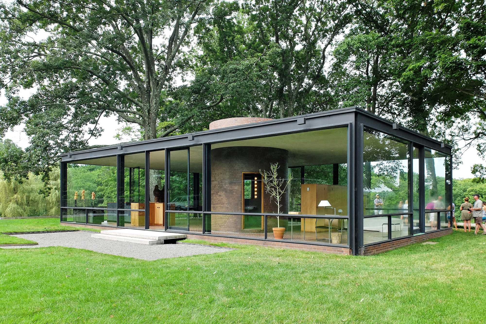
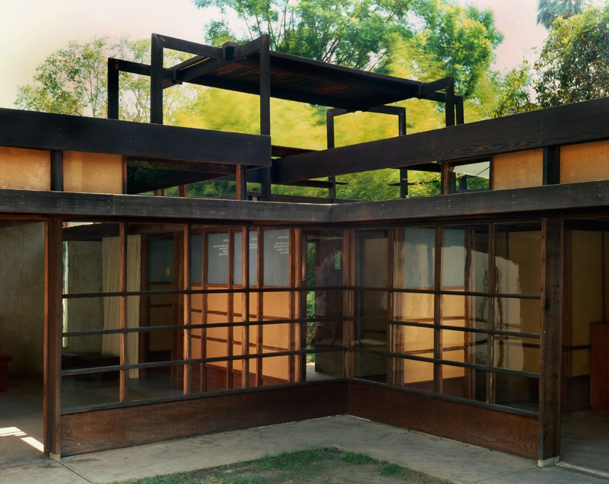
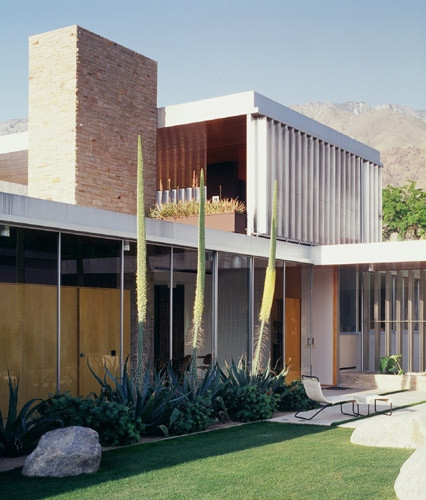

Known for clean lines, minimal decoration, and connection with nature, mid-century modern architecture is an American classic that kicked off after World War II. Mid-century modern homes are characterized by very wide, low footprints with large, open spaces, floor-to-ceiling windows, and an emphasis on bringing the outdoors in. Although mid-century modern architecture boomed all across America from 1945 to 1969, it's seen a major resurgence in recent years.

The Philip Johnson Glass House in New Canaan, Connecticut
The pastoral 49-acre landscape comprises fourteen structures, including the Glass House (1949), and features a permanent collection of renowned 20th century painting and sculpture, along with temporary exhibitions. The campus serves as a catalyst for the preservation and interpretation of modern architecture, landscape, and art; and a canvas for inspiration and experimentation. The house, which ushered the International Style into residential American architecture, is iconic because of its innovative use of materials and its seamless integration into the landscape. It began an odyssey of architectural experimentation in forms, materials, and ideas through the addition of many new "pavilions"—Guest House, Pavilion on the Pond, Painting Gallery, Sculpture Gallery, Ghost House, Studio, and Da Monsta—and the methodical sculpting of the surrounding landscape with outdoor sculptures by Donald Judd and Julian Schnabel.

The Schindler House in West Hollywood, California
Incorporating both architectural and social theory, it unfolds formally, spatially and intellectually with a coherence unparalleled in early modern architecture. It was the shared vision of Schindler and his wife Pauline: he gave brilliant architectural form to her interest in a revisionist lifestyle. The house was conceived as an experiment in communal living to be shared with another couple, Clyde and Marian Chace. There were four rooms, one for each person to “express his or her individuality.” The communal gathering areas were patios in the garden, one for each family. There was a shared kitchen and outdoor sleeping porches were provided on the roof. A guest apartment with its own kitchen and bath extended from the rear of the house. The house became an architectural laboratory: it is the birthplace of the Southern California modernism we celebrate today.

The Kaufmann House in Palm Springs, California
Built in 1946, the boxy two-storey residence has many defining elements of modern architecture – a flat roof, pale exterior and shaded outdoor spaces – tailored to the arid climate of the California desert. Its prominent features include slatted metal walls, which create breezy indoor-outdoor spaces alongside landscaping with large boulders, cacti, palms and sandy gardens. The house in Palm Springs is predominantly oriented east-west, maximising sunrise and sunset views. The layout includes five bedrooms and five bathrooms, with a grassy backyard and pool overlooking the San Jacinto Mountains to the west. Large sliding glass doors open onto patios that are lined with vertical, moveable metal fins. The Kaufmann House is one of the most famous buildings by Neutra, who was a key figure of the modernist architecture movement. He was lauded for designing homes that were tailored to the warm California climate, using ample glazing, boxy constructions, light facades, and outdoor living areas.